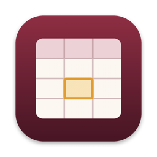

CellarCellar borrows the Wine 11 runtime that Recall uses to run Overwatch and builds Excel its own Windows bottle. You get a Mac app for the Dock and Finder's Open With menu.
There's no virtual machine. Wine translates Windows calls into macOS calls as they happen, and Rosetta runs the Intel code on Apple Silicon.
Cellar copies the Wine 11 build from your Recall install. If you don't have Recall, it falls back to any Wine on your PATH.
A clean 64-bit Windows 10 prefix, kept separate from Overwatch. The settings are tuned for Office.
Cellar.app lives in Launchpad and shows up in Finder's Open With menu. It walks you through setup and install on first run.
You need an Apple Silicon Mac with Rosetta 2, and your own Office installer and licence. Cellar ships no Microsoft software.
$ git clone https://github.com/tbuettgen/cellar.git $ cd cellar $ ./bin/cellar setup # create the bottle, about a minute $ ./bin/cellar install ~/Downloads/setup.exe # .exe, .iso or .img $ ./bin/cellar app # adds Cellar.app to ~/Applications
Using Microsoft 365? Download Microsoft's free Office Deployment Tool. Then run cellar install path/to/setup.exe config/excel-only.xml to install 32-bit Excel and nothing else.
Everything goes through one script. Cellar.app calls the same commands.
cellar setup | Find a runtime, create the bottle, apply tweaks. Safe to re-run. |
cellar install <installer> [job.xml] | Run an Office installer. Add a job file to run it through the Office Deployment Tool. |
cellar run [files…] | Open Excel, optionally with spreadsheets. |
cellar app | Build the Mac launcher in ~/Applications. |
cellar display retina|normal | Sharp 2× text on Retina screens, or 1× for external monitors. |
cellar exec <program> | Run any other Windows program in the bottle. |
cellar stop | Force-quit everything in the bottle. |
cellar doctor | Show what's installed and where. |
Small settings that make a Windows app less awkward on macOS.
Left ⌘ acts as Ctrl, so ⌘C, ⌘V, ⌘S and ⌘Z do what you expect.
The bottle runs at 192 DPI in Retina mode with font smoothing, so cells stay crisp. Switch to normal for 1× monitors.
.xlsx, .xls, .xlsm and .csv files list Cellar under Open With. Numbers stays your default.
Office's hardware acceleration and animations are off, which avoids most of Wine's redraw bugs.
Office under Wine is hit and miss, and Cellar can't change that. This is what to expect.